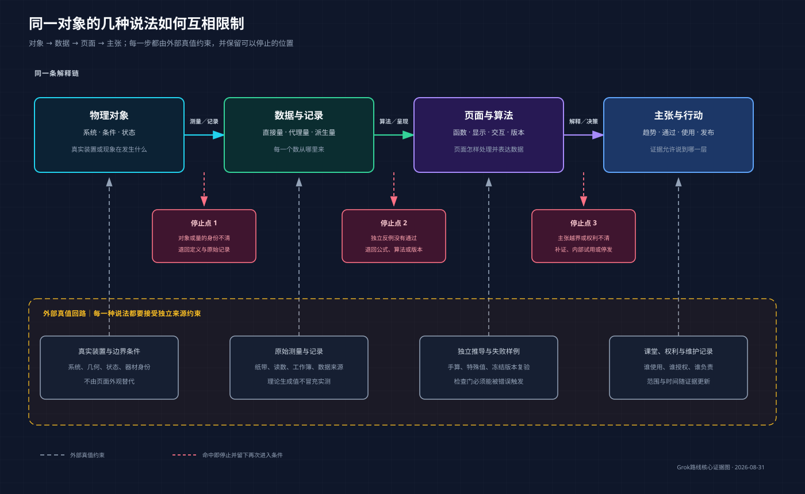
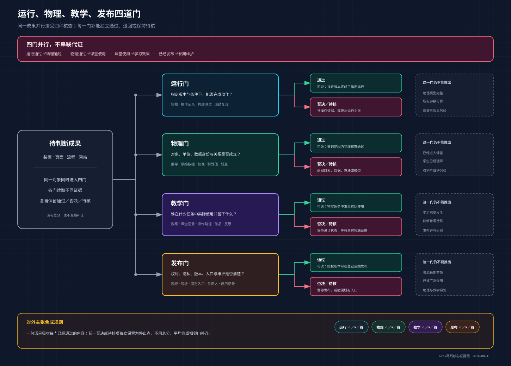

以前
已经有Grok路线、章序和案例落位，但还不能连续阅读，读者无法直接判断整本书的声音与节奏。
十一章连续正文已经贯通：从机械能公开课中的比较缺口，走到数据、测量、页面、学生作品、系统判断、版本、自动化和四道证据门。这里集中提供正文、事实台账、核心证据图和作者审阅入口。
已经有Grok路线、章序和案例落位，但还不能连续阅读，读者无法直接判断整本书的声音与节奏。
四篇十一章正文、逐章证据台账、必要图位、两幅核心图和完成审查已经连成一个审阅包。
可以用真实文本比较三条路线；每个局部通过都有对象、版本与停点，不再依赖抽象结构评价。

